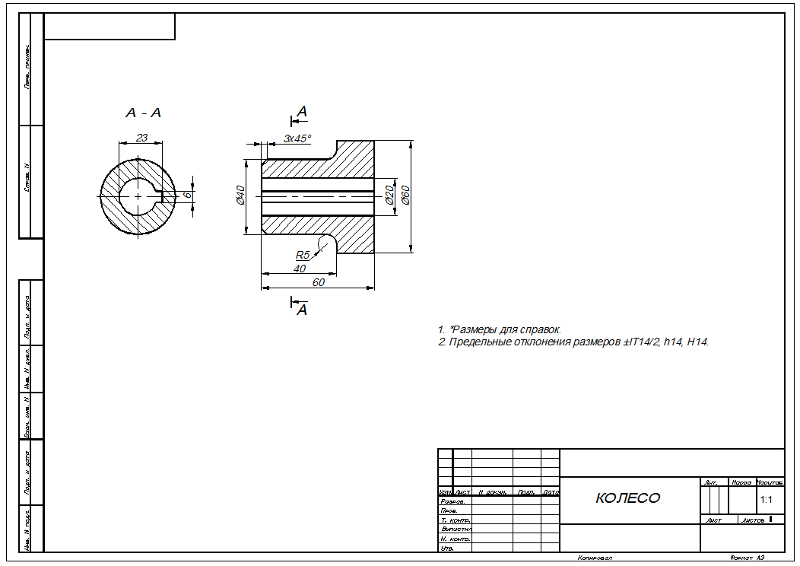

1. Создание первой 3D - модели
Вводная часть
Для начала хочу сравнить по удобству в работе T - FlexCAD и Autodeck Inventor.
Конечно у разных пользователей будут свои предпочтения, я обозначу только своё мнение.
К преимуществам T - FlexCAD я отношу:
- возможность использовать для разметки специальные бесконечные линии;
- возможность создавать и детали и сборки в одной среде;
- множество возможностей создания 3D - узлов;
- простота позиционирования при вставке фрагментов;
- хорошая справочная система по командам;
- библиотека деталей по ГОСТ.
- простой интерфейс;
- удобный видовой куб для позиционирования;
- параметрическое моделирование при построении эскизов;
- возможность построения металлоконструкций по экизам, с последующей вставкой профилей и возможностью их обрезки;
- удобсво построения чертежей по созданной модели;
- альтернативная возможность построения зубчатых колёс и валов.
Для начала для сравнения выполним модель той же сборочной единцы (Колесо с осью), что мы делали в T - FlexCAD, а потом модель какой-нибудь металлоконструкции.
Чертёж детали Колесо
Команда Окружность — Указать ценральную точку и начать передвигать мышь — Набрать размер диаметра в появившемся прямоугольнике — Нажать Enter
- перемещение модели по окну — перемещением мыши с нажатым колёсиком мыши;
- приближение и удаление модели — вращением колёсика мыши;
- вращение модели — перемещением мыши с нажатым колёсиком и клавишей Shift;
- кроме этого в правом верхнем углу окна есть очень удобный элемент Видовой куб (см. рисунок ниже).
Щёлкая по его граням, рёбрам или вершинам можно придавать модели нужное положение в 3D - пространстве.
Мы вернулись в пространство 3D - модели. Раскажу как в нём перемещаться: